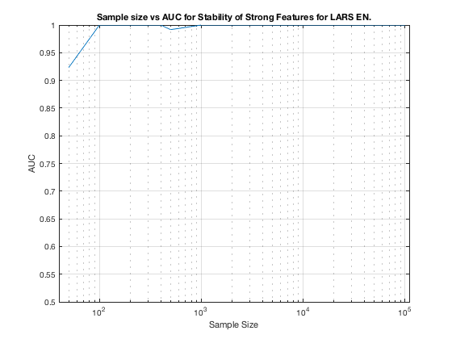

TIE-Net-Weak1. Summary. Elastic Net.
summary_stability_type("MltNet", 3)
TOTAL COUNTS: Total=1327, Strong=23, Weak=1300, Irrelevant=4
Figure 97. Stability as a predictor for Strong Features for Elastic Net on TIE-Net-Weak1.
__________________________________________________________________________________________

Table 97. Breakdown of Stability by Feature Type for Elastic Net.
__________________________________________________________________
(1) Number Features Repeat (n_fs_rep): number of unique features that were selected in a repeat
(2) Number Features Fold (n_fs_fold): number of unique features that were selected in a fold
(3) Feature Stability ~ Feature Selection Frequency
Sample_Size All_n_fs_rep All_n_fs_fold All_Stability
___________ _________________________ _______________________ ___________________
' 50 ' ' 351.980 +/- 4.472 ' ' 57.038 +/- 1.024 ' ' 0.043 +/- 0.030 '
' 100 ' ' 603.620 +/- 3.966 ' ' 118.712 +/- 1.306 ' ' 0.089 +/- 0.038 '
' 200 ' ' 578.860 +/- 3.803 ' ' 118.322 +/- 1.024 ' ' 0.089 +/- 0.048 '
' 300 ' ' 521.080 +/- 3.318 ' ' 113.734 +/- 1.180 ' ' 0.086 +/- 0.055 '
' 400 ' ' 561.340 +/- 3.020 ' ' 127.216 +/- 0.983 ' ' 0.096 +/- 0.064 '
' 500 ' ' 528.360 +/- 3.227 ' ' 120.068 +/- 1.033 ' ' 0.090 +/- 0.072 '
' 1000 ' ' 546.680 +/- 2.983 ' ' 131.790 +/- 1.041 ' ' 0.099 +/- 0.094 '
' 2000 ' ' 525.300 +/- 2.658 ' ' 133.466 +/- 0.865 ' ' 0.101 +/- 0.106 '
' 5000 ' ' 528.340 +/- 2.505 ' ' 145.042 +/- 0.830 ' ' 0.109 +/- 0.121 '
' 10000 ' ' 488.480 +/- 2.492 ' ' 132.370 +/- 0.851 ' ' 0.100 +/- 0.123 '
' 100000 ' ' 356.280 +/- 2.249 ' ' 93.444 +/- 0.614 ' ' 0.070 +/- 0.118 '
Sample_Size Strong_n_fs_rep Strong_n_fs_fold Strong_Stability
___________ _____________________ _____________________ ___________________
' 50 ' ' 14.460 +/- 0.110 ' ' 4.248 +/- 0.035 ' ' 0.185 +/- 0.125 '
' 100 ' ' 17.880 +/- 0.095 ' ' 6.368 +/- 0.040 ' ' 0.277 +/- 0.132 '
' 200 ' ' 19.600 +/- 0.075 ' ' 7.908 +/- 0.045 ' ' 0.344 +/- 0.159 '
' 300 ' ' 19.960 +/- 0.081 ' ' 9.016 +/- 0.051 ' ' 0.392 +/- 0.165 '
' 400 ' ' 21.880 +/- 0.047 ' ' 10.538 +/- 0.055 ' ' 0.458 +/- 0.158 '
' 500 ' ' 20.880 +/- 0.066 ' ' 10.978 +/- 0.066 ' ' 0.477 +/- 0.168 '
' 1000 ' ' 22.660 +/- 0.027 ' ' 14.276 +/- 0.060 ' ' 0.621 +/- 0.110 '
' 2000 ' ' 23.000 +/- 0.000 ' ' 16.832 +/- 0.049 ' ' 0.732 +/- 0.095 '
' 5000 ' ' 23.000 +/- 0.000 ' ' 18.720 +/- 0.040 ' ' 0.814 +/- 0.085 '
' 10000 ' ' 23.000 +/- 0.000 ' ' 20.166 +/- 0.039 ' ' 0.877 +/- 0.068 '
' 100000 ' ' 23.000 +/- 0.000 ' ' 19.344 +/- 0.033 ' ' 0.841 +/- 0.125 '
Sample_Size Weak_n_fs_rep Weak_n_fs_fold Weak_Stability
___________ _________________________ _______________________ ___________________
' 50 ' ' 335.680 +/- 4.407 ' ' 52.386 +/- 1.012 ' ' 0.040 +/- 0.017 '
' 100 ' ' 583.500 +/- 3.910 ' ' 111.734 +/- 1.286 ' ' 0.086 +/- 0.023 '
' 200 ' ' 557.000 +/- 3.774 ' ' 109.874 +/- 0.993 ' ' 0.085 +/- 0.027 '
' 300 ' ' 499.000 +/- 3.295 ' ' 104.240 +/- 1.156 ' ' 0.080 +/- 0.031 '
' 400 ' ' 537.560 +/- 3.012 ' ' 116.244 +/- 0.957 ' ' 0.089 +/- 0.038 '
' 500 ' ' 505.560 +/- 3.216 ' ' 108.626 +/- 1.000 ' ' 0.084 +/- 0.046 '
' 1000 ' ' 521.900 +/- 2.973 ' ' 117.066 +/- 1.017 ' ' 0.090 +/- 0.063 '
' 2000 ' ' 500.040 +/- 2.652 ' ' 116.062 +/- 0.841 ' ' 0.089 +/- 0.064 '
' 5000 ' ' 503.240 +/- 2.499 ' ' 125.626 +/- 0.809 ' ' 0.097 +/- 0.077 '
' 10000 ' ' 463.400 +/- 2.485 ' ' 111.540 +/- 0.836 ' ' 0.086 +/- 0.067 '
' 100000 ' ' 331.440 +/- 2.246 ' ' 73.458 +/- 0.601 ' ' 0.057 +/- 0.058 '
Sample_Size Irrelevant_n_fs_rep Irrelevant_n_fs_fold Irrelevant_Stability
___________ ___________________ ____________________ ____________________
' 50 ' ' 1.840 +/- 0.020 ' ' 0.404 +/- 0.007 ' ' 0.101 +/- 0.037 '
' 100 ' ' 2.240 +/- 0.018 ' ' 0.610 +/- 0.008 ' ' 0.152 +/- 0.020 '
' 200 ' ' 2.260 +/- 0.022 ' ' 0.540 +/- 0.009 ' ' 0.135 +/- 0.014 '
' 300 ' ' 2.120 +/- 0.020 ' ' 0.478 +/- 0.007 ' ' 0.119 +/- 0.022 '
' 400 ' ' 1.900 +/- 0.018 ' ' 0.434 +/- 0.006 ' ' 0.108 +/- 0.047 '
' 500 ' ' 1.920 +/- 0.023 ' ' 0.464 +/- 0.010 ' ' 0.116 +/- 0.011 '
' 1000 ' ' 2.120 +/- 0.022 ' ' 0.448 +/- 0.007 ' ' 0.112 +/- 0.010 '
' 2000 ' ' 2.260 +/- 0.017 ' ' 0.572 +/- 0.008 ' ' 0.143 +/- 0.009 '
' 5000 ' ' 2.100 +/- 0.021 ' ' 0.696 +/- 0.009 ' ' 0.174 +/- 0.027 '
' 10000 ' ' 2.080 +/- 0.018 ' ' 0.664 +/- 0.009 ' ' 0.166 +/- 0.067 '
' 100000 ' ' 1.840 +/- 0.020 ' ' 0.642 +/- 0.010 ' ' 0.161 +/- 0.031 '